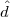

Midterm Exam, Fall 2015
Take Home Due: Beginning of class, Friday, 13 October 2015.
This is to be all your own work. You may use any result from class, homeworks, or the books on reserve in the library. You may also use anything that is linked directly from the course webpage. I will have office hours on Tuesdays from 2-5pm and Wednesdays from 11am-1pm. Do not consult anybody or anything else. The exam consists of six questions and is worth a total of 100 points.
where A is an p×n matrix, b IRp, and f and each gi are smooth functions from IRn to IR. Assume is a feasible solution. Assume there exists a direction  with A= 0 and ∇gi()T < 0 for all the active constraints I at . Show the constraint qualification T = G′∩ H0 holds at , where T is the cone of tangents at , G′ = {d IRn : ∇gi()T d ≤ 0∀i I}, and H0 = {d IRn : ∇hj()T d = 0 for j = 1,…,p}.
Does it satisfy the second order necessary conditions? What about the second order sufficient conditions? Find all other KKT points and check the second order necessary and sufficient conditions for those points. Find the globally optimal solution (justify your answer). (Note: You should find that one of the KKT points is irrational.)
|
| (1) |
has Lagrangian dual function
|
| (2) |
and Lagrangian dual problem
|
| (3) |
| John Mitchell |
| Amos Eaton 325 |
| x6915. |
| mitchj at rpi dot edu |
| Office hours: Tuesday 2 – 5pm, Wednesday 11am–1pm. |